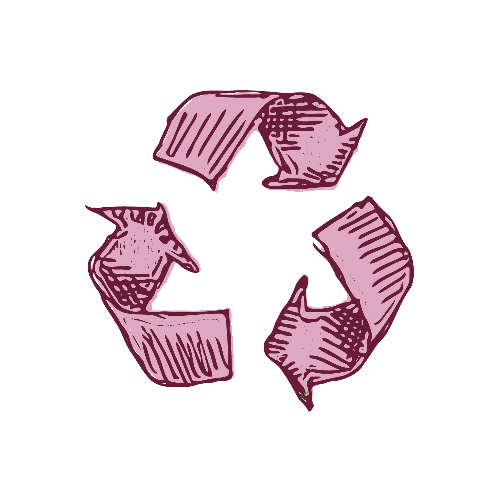
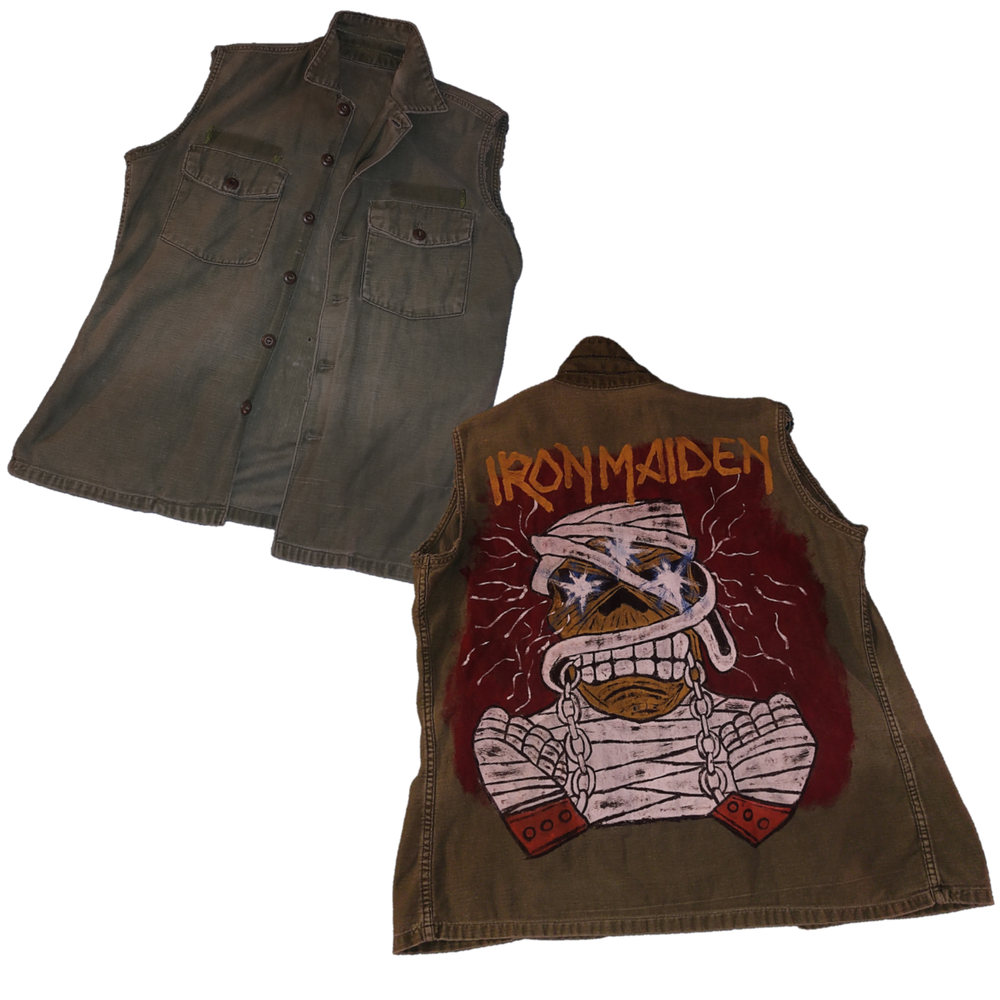
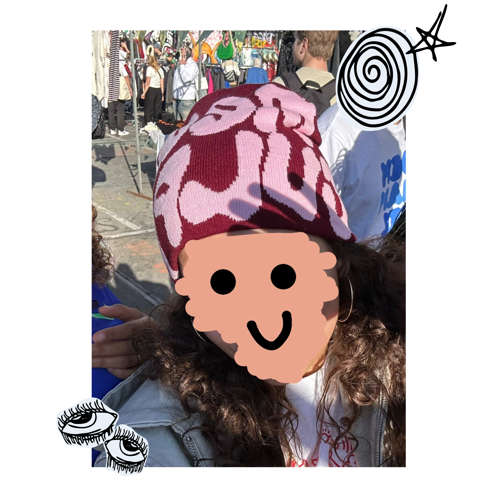

Duurzaamheid
De IJhallen draagt sterk bij aan duurzaamheid. Door tweedehands kleding en spullen te verkopen, verlengen ze de levensduur van producten en verminderen ze afval en de impact van fast fashion. Fast fashion heeft een grote negatieve impact op het milieu. De kleding op de markt is vaak van betere kwaliteit om langer mee te gaan, wat leidt tot minder consumptie van nieuw geproduceerde kleding.
Mijn vondsten
Veel verkopers bij IJhallen richten zich op het upcyclen van kleding en andere materialen. Dit betekent dat ze gebruikte items een creatieve update geven of hergebruiken voor iets nieuws. Zo heb ik zelf dit coole jasje gevonden. De mouwen zijn eraf gehaald door de verkoopster, en op de rugkant heeft ze een met de hand geschilderde illustratie gemaakt. Een mooi voorbeeld van upcycling en een uniek exemplaar dus!
Ook vond ik deze warme muts, perfect voor de winter. Door deze tweedehands te kopen, heb ik de muts een nieuw leven gegeven en vermijd ik onnodige verspilling. Het was een kleine, duurzame keuze die bijdraagt aan het verminderen van afval. En alle beetjes helpen!
